Below are 3 images and their respective prompts using the DeepFloyd IF diffusion model, with num_inference_steps of 40 and 100. I used a seed value of 1 for this project.
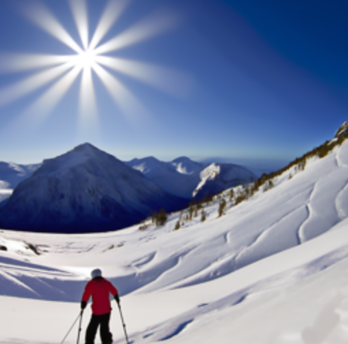
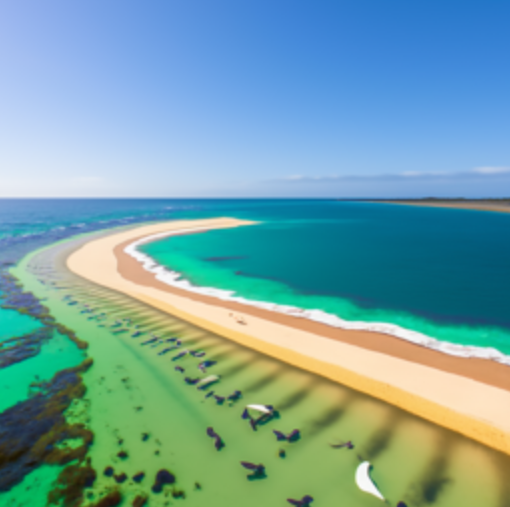
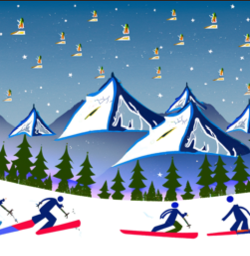
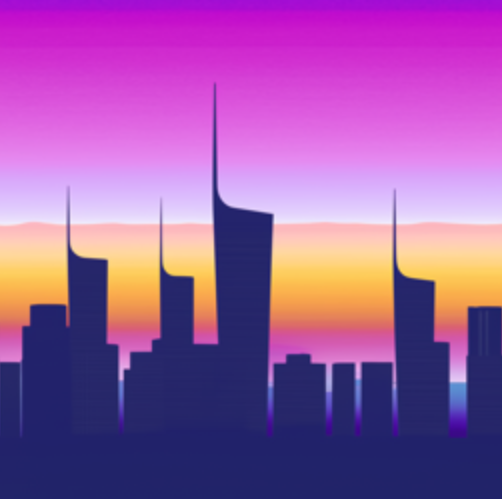
First, I implemented the forward function to add noise to the images. Below is my implementation:
def forward(im, t):
"""
Args:
im : torch tensor of size (1, 3, 64, 64) representing the clean image
t : integer timestep
Returns:
im_noisy : torch tensor of size (1, 3, 64, 64) representing the noisy image at timestep t
"""
with torch.no_grad():
device = im.device
a = alphas_cumprod[t].to(device)
e = torch.normal(mean=0, std=1, size=im.shape).to(device)
im_noisy = torch.sqrt(a) * im + torch.sqrt(1-a)*e
# ===== end of code ====
return im_noisy
Below is the Campanile image at 0, 250, 500, and 750 noise levels.
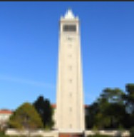
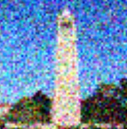
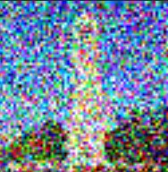
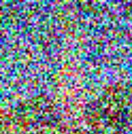
Next, I tried to de-noise these noisy images using Gaussian blur filtering. However, the results were not very satisfactory, as seen below.
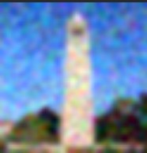
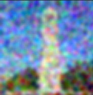
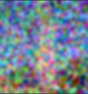
Next, I tried one-step de-noising, where I used a UNet to fill in the image with the prompt "a high quality photo".
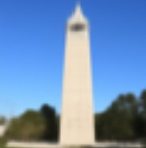
I then implemented iterative de-noising, where I created strided_timesteps, which started at 990 and decreased by 30 until it reached 0. I then applied to formula from the spec, and I got a much better approximation of the original image, as seen below.
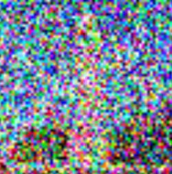
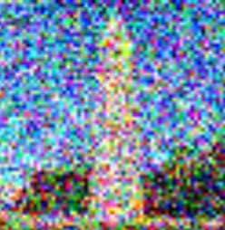
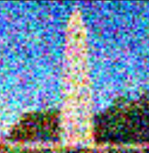
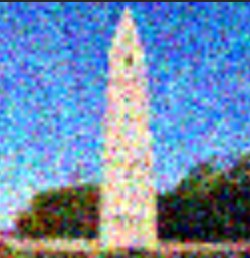
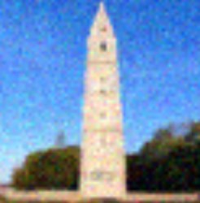
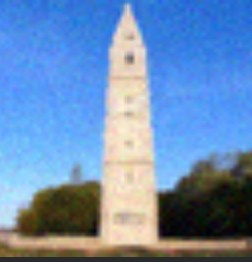
For this part, I set i_start = 0, and then passed it through same iterative_denoise function, and by doing this I generated completely random images, as seen below.
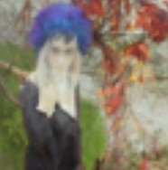
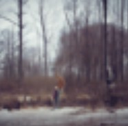
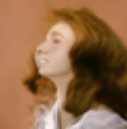
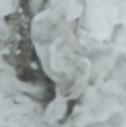
Next, I implemented CFG according to the algorithm described in the spec. I did this by running the UNet twice, and then combining the noise amounts. I then added conditional variance to the output, and resulting images were much better quality then the diffusion model sampling images. My code for this section is below
# The conditional prompt embedding
prompt_embeds = prompt_embeds_dict['a high quality photo']
# The unconditional prompt embedding
uncond_prompt_embeds = prompt_embeds_dict['']
def iterative_denoise_cfg(im_noisy, i_start, prompt_embeds, uncond_prompt_embeds, timesteps, scale=7, display=True):
image = im_noisy
with torch.no_grad():
for i in range(i_start, len(timesteps) - 1):
# Get timesteps
t = timesteps[i]
prev_t = timesteps[i+1]
# Get `alpha_cumprod`, `alpha_cumprod_prev`, `alpha`, `beta`
# ===== your code here! =====
a1 = alphas_cumprod[t].to(image.device)
a2 = alphas_cumprod[prev_t].to(image.device)
b = (1 - a1/a2)
# ==== end of code ====
# Get cond noise estimate
model_output = stage_1.unet(
image,
t,
encoder_hidden_states=prompt_embeds,
return_dict=False
)[0]
# Get uncond noise estimate
uncond_model_output = stage_1.unet(
image,
t,
encoder_hidden_states=uncond_prompt_embeds,
return_dict=False
)[0]
# Split estimate into noise and variance estimate
noise_est, predicted_variance = torch.split(model_output, image.shape[1], dim=1)
uncond_noise_est, _ = torch.split(uncond_model_output, image.shape[1], dim=1)
# Compute the CFG noise estimate based on equation 4
# ===== your code here! =====
cfg = uncond_noise_est + scale * (noise_est - uncond_noise_est)
# ==== end of code ====
# Get `pred_prev_image`, the next less noisy image.
# ===== your code here! =====
x0 = (image - torch.sqrt(1-a1) * cfg) / torch.sqrt(a1)
pred_prev_image = add_variance(predicted_variance, t, (torch.sqrt(a2) * b / (1-a1) * x0) + torch.sqrt(a1/a2) * (1-a2)/(1-a1) * image)
# ==== end of code ====
image = pred_prev_image
if (i - i_start) % 5 == 0:
final = image.float().cpu()[0].permute(1, 2, 0)
media.show_image(final)
print("iteration = " + str(i) + ", t = " + str(t))
clean = image.cpu().detach().numpy()
return clean
prompt_embeds = prompt_embeds_dict["a high quality photo"].half().to(device)
images = []
for i in range(5):
im_noisy = torch.randn(1, 3, 64, 64).half().to(device)
clean = iterative_denoise_cfg(im_noisy,
i_start=0,
prompt_embeds=prompt_embeds,
uncond_prompt_embeds=prompt_embeds_dict[''].half().to(device),
timesteps=strided_timesteps, scale=7, display=False)
images.append(torch.tensor(clean)[0].permute(1, 2, 0) / 2. + 0.5)
media.show_images(images)
Below are the resulting generated images:
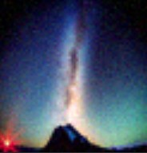
I used the noise levels [1, 3, 5, 7, 10, 20] to edit the Campanile and two other photots, as seen below
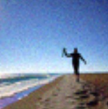
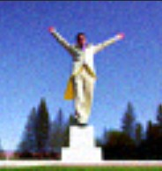
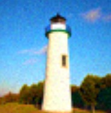
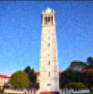
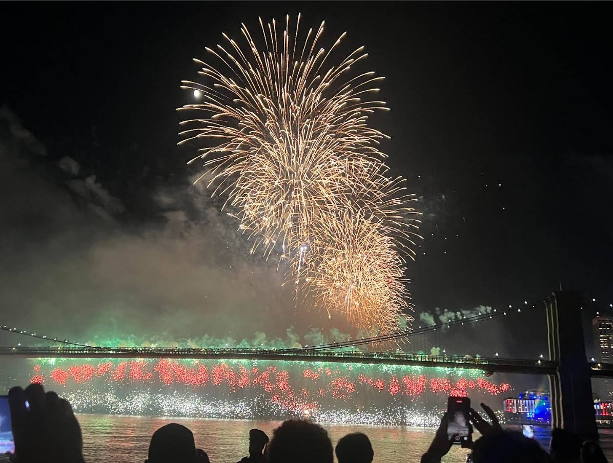
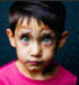
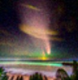
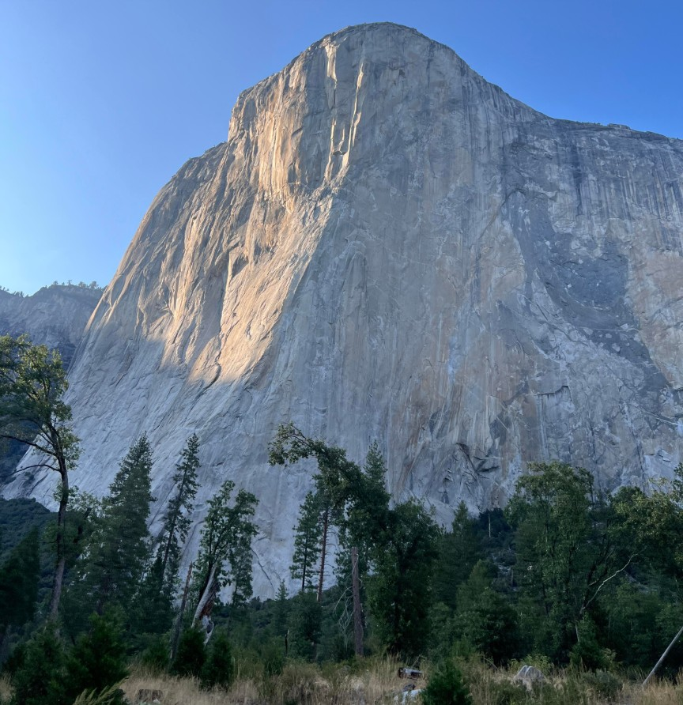
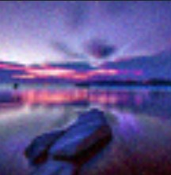
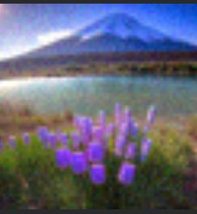
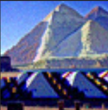
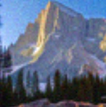
Next, I used a similar process with an online image, as seen below.
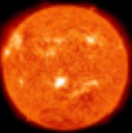
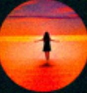
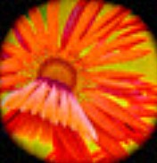
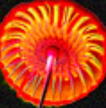
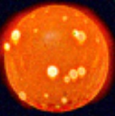
I also repeated this for a drawn image.
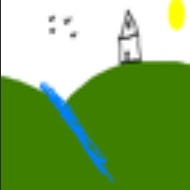
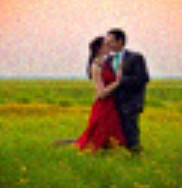
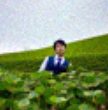
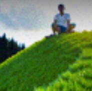
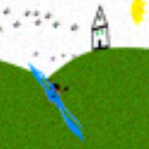